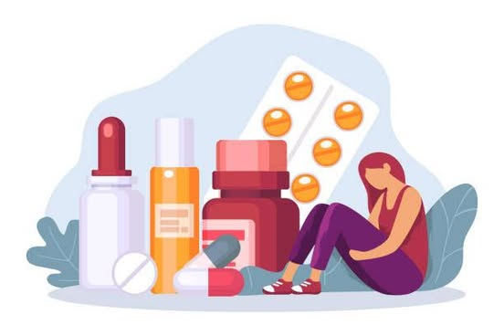

Se consideran variables independientes: la cantidad de sustancia, la frecuencia de consumo, el tipo de sustancia y la duración del tratamiento. Estas se manipulan para analizar su efecto en la recuperación del adolescente.
En México, el consumo de drogas entre adolescentes en preparatoria va en aumento. Esto afecta su rendimiento escolar, salud mental y física, y puede llevar a la deserción escolar y conflictos familiares.
Es un tema grave porque no solo afecta al estudiante, sino también a su entorno familiar y escolar. El consumo y venta de drogas dentro de la escuela puede provocar sanciones severas y problemas legales, por lo que debe tratarse con firmeza y estrategias de prevención.
Desde los años 90 se ha normalizado el uso de drogas en medios como la música y el cine. Además, muchos jóvenes crecen en entornos familiares donde se tolera el consumo. La pandemia de COVID-19 también fue un factor que aumentó el consumo por depresión, ansiedad y aislamiento.
Conocer este problema permite prevenirlo. Hablar del tema en casa, enseñar a decir “no” y promover conciencia en los jóvenes es clave. Las escuelas pueden implementar revisiones, talleres, pláticas y redes de apoyo entre estudiantes para evitar que caigan en adicciones.
